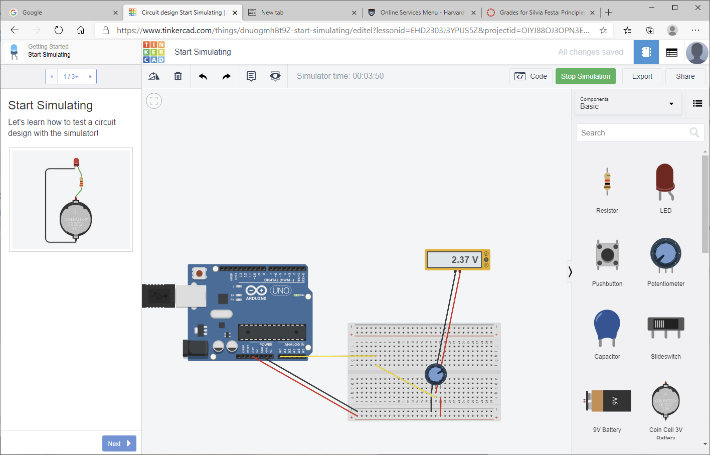
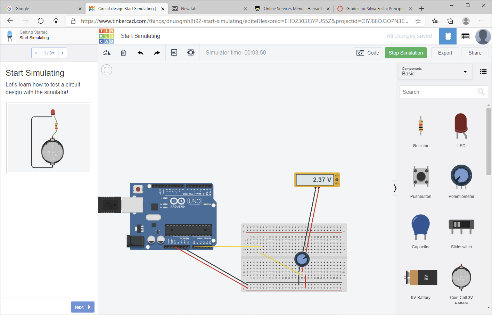
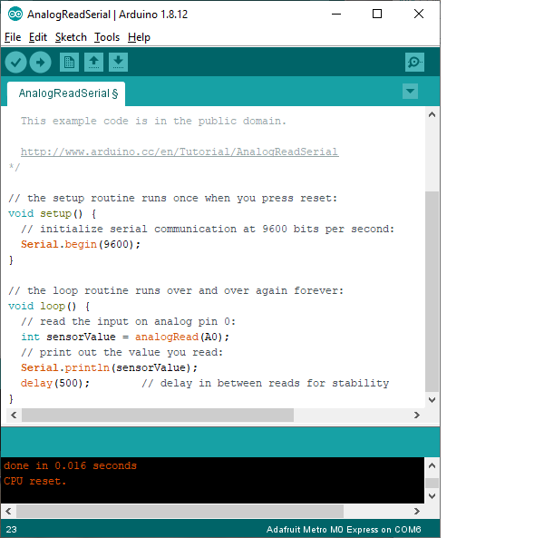
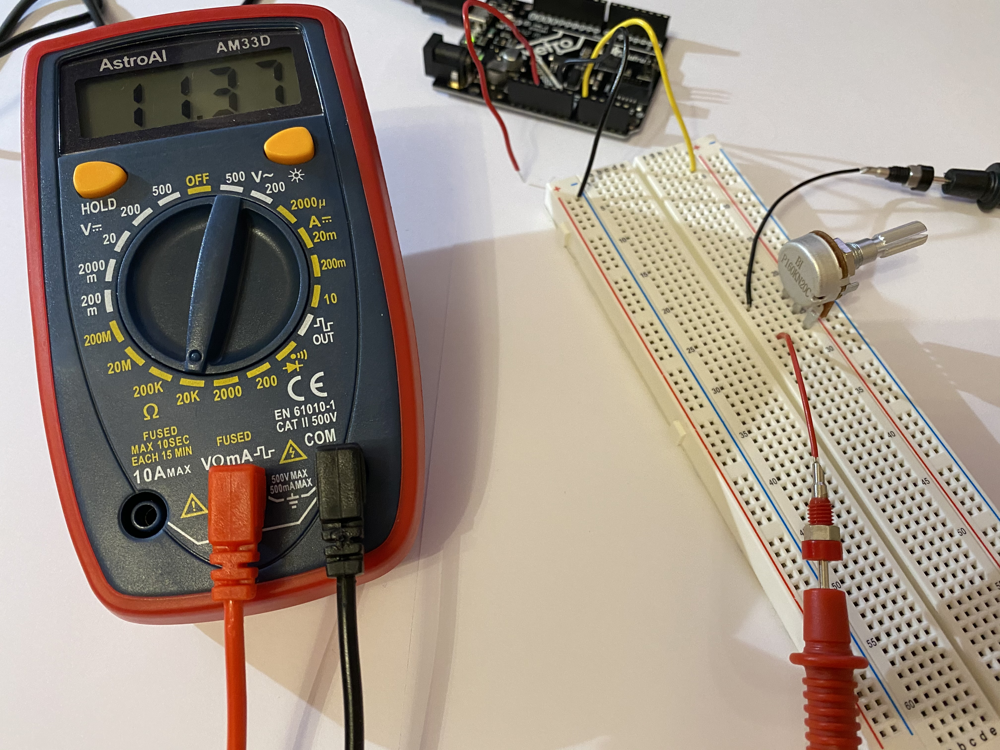

Topic 3: Electronic Basics and Microcontroller Intro
RESISTORS
Resistors are circuits elements that dissipate power, inside of them there is a voltage drop that is proportional to the resistance of the resistor. The resistance of a resistor can be measured with a multimeter:


RESISTORS IN SERIES AND RESISTORS IN PARALLEL:
Two resistor are in parallel when across them there is the same voltage drop, while two resistors are in series when the same current flows across them:
A wire of a circuit can be considered as a perfect conductor. Inside perfect conductors electric potential is uniformly distributed, therefore the electric potential will be the same in each point of the wire. So when are two resistor in parallel? The drop in voltage inside them must be the same, which means that the ends of the two resistors must be connected to the same wires:
This is the voltage drop mesured with a multimeter:
Here are some examples:

When are two resistor in series? Two resistors are in series when the current that flows through one flows trough the other. Current is the amount of charge that flows per unit of time. We can think of current flowing through a circuit as water flowing through pipes. If there is a junction, all the current that goes in the junction must go out, therefore if one wire divides into two the currents inside the two wires must be less than the current in the first wire (i=i1+i2). So two resistors are in series if all the current that comes from the first resistor goes into the second without being divided by a junction:
Here are some examples:

The voltage drop is divided proportionally to the resistance:
POTENTIOMETER
A potentiometer is a circuit element that is similiar to a resistor because it dissipates power, but it has three terminals. The voltage drop can be divided between the two terminals: it works like two resistors in series in which you can change the resistance as you prefer, keeping the equivalent resistance (R1+R2) constant. Here is my circuit with a potentiometer:
 

I have created a circuit with the potentiometer and run the arduino example program "AnalogReadSeries" to read the different values of the voltage drop between the terminal connected to ground and the terminal in the middle.
To see the voltage changing I have modified the program so that the interval between two values was 0,5 seconds instead of 1 millisecond.

The values of the voltage (between 0 and 3.3V) were rescaled from 0 to 1024, threfore I changed the program to obtain the actual values.


The total voltage drop of the potentiometer is constant but it can be divided differently:
Also the resistance of the potentiometer can be measured with the multimeter:
LIGHTING AN LED
The LED has two leads of different lenghts, the longer one is the anode and the shorter one is the cathode. Current flows from the anode to the cathode therefore to light an LED you must connect the anode tho the higher potential and the cathode to the lowest potential. If the voltage is bigger the LED is brighter, if the voltage is smaller the LED is dimmer